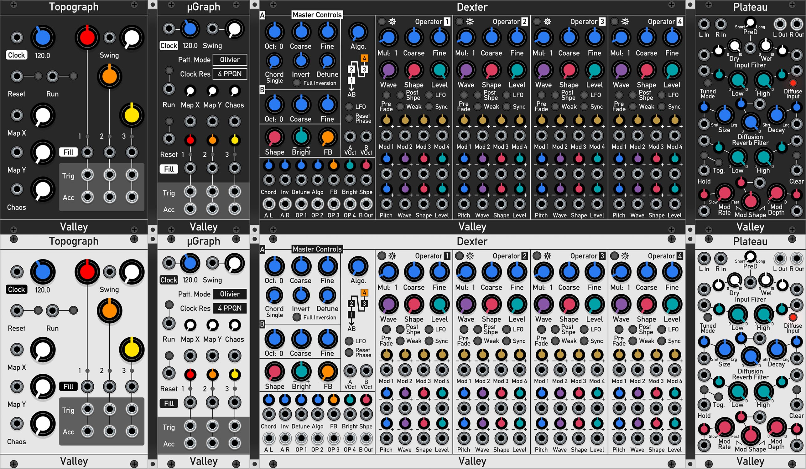

Add-on modules for VCV Rack
Available to download in the official VCV Rack Plugin Manager

List of modules
- Topograph & µGraph: Drum sequencer based on the Mutable Instruments' "Grids".
- Dexter: Complex, 4 operator FM, wavetable oscillator.
- Plateau: Highly modulateable plate reverb.